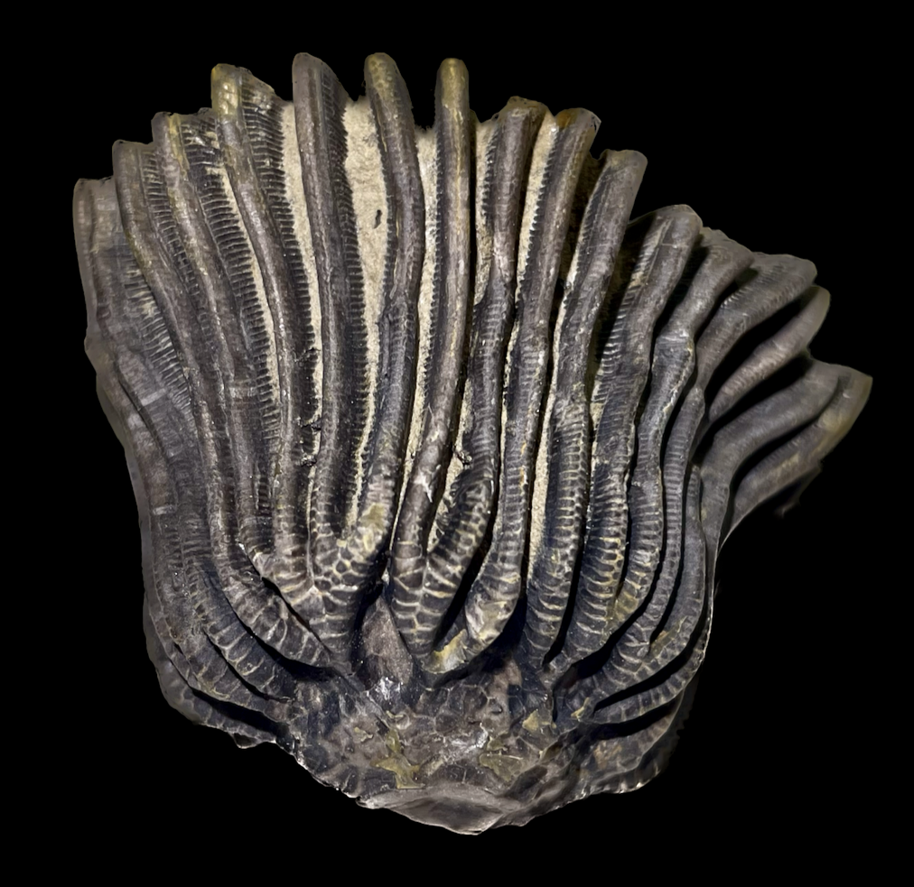
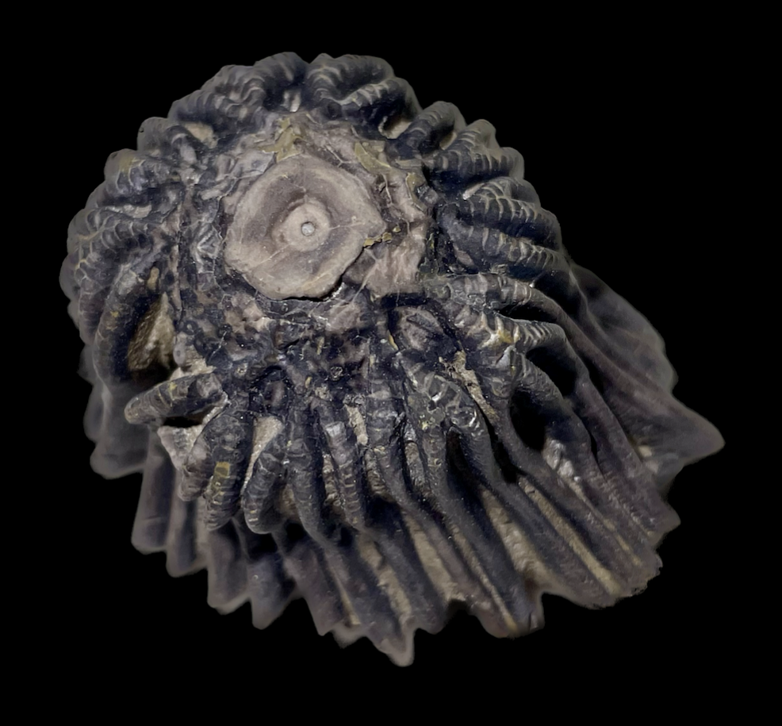
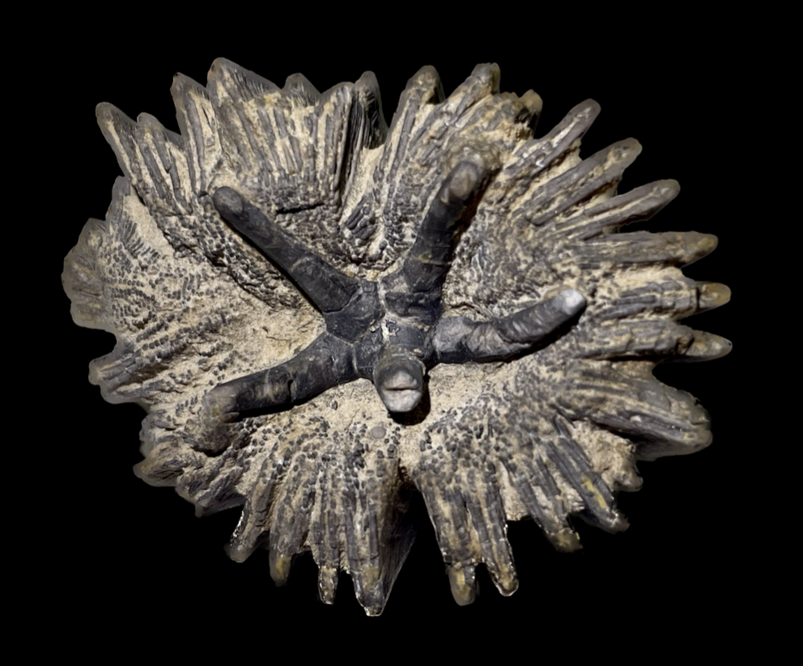

Gennaeocrinus mourantae
• Devonian
• Arkona Formation
• Arkona, Ontario, Canada
Size: 5.5 cm across the arms
Gennaeocrinus mourantae is considered the "holy grail" of Arkona crinoids and one of the rarest. It is a monobathrid camerate with a very low sculpted calyx and biserial arms that branch densely near the calyx. The most striking feature of this crinoid is the five defensive spines arising from its tegmen, likely to protect against predatory attack and/or parasitism by copraphagous gastropods.
|

|
Copyright © 2024 by Samuel Kim, all rights reserved